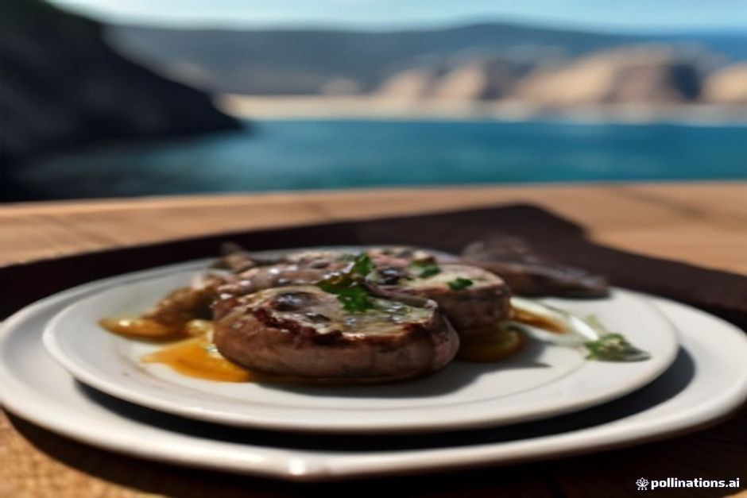
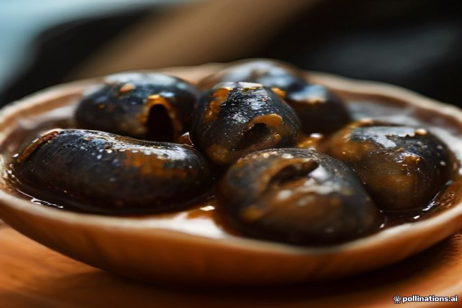

Pide marisco en casi cualquier tasca de la costa sur de Madeira y encontrarás lapas en la carta, casi siempre como entrante antes de que llegue la espetada. Esto es lo que son en realidad, por qué su pesca está hoy más regulada que antes, y dónde encontrar un plato que merezca la pena pedir.
¿Qué son las lapas?
Las lapas son pequeños moluscos de concha cónica que se agarran a las rocas volcánicas de Madeira en la zona de salpicadura entre la marea alta y la baja. Se recogen a mano, normalmente despegándolas de la roca con un cuchillo, y se sirven enteras dentro de la concha en lugar de desconchadas y emplatadas. En la isla se tratan menos como un manjar que como un entrante de marisco del día a día, el tipo de cosa que se pide sin pensarlo junto a una cerveza o una copa de vino blanco mientras se espera el plato principal.

¿Cómo se cocinan las lapas en Madeira?
Se asan a la brasa, todavía dentro de la concha, a fuego fuerte durante solo un par de minutos — lo justo para que la carne se afirme sin llegar a ponerse gomosa. El remate clásico es mantequilla derretida, ajo machacado, cilantro fresco y un chorrito de limón, vertidos directamente en la concha, que así hace también de plato de servicio. Algunas cocinas cambian el cilantro por perejil o añaden un chorro de vino blanco a la mantequilla, pero el ajo, el limón y el fuego fuerte son innegociables en casi todas las versiones de la isla.
¿A qué saben las lapas?
Saben a mar y tienen un punto ligeramente correoso, más parecidas a una almeja firme que a una ostra, con un dulzor suave que la mantequilla de ajo está pensada para complementar y no para taparlo. La textura es lo que más sorprende a quien las prueba por primera vez — un buen plato tiene cierta resistencia al morder, no la blandura que se deshace en la boca de otros mariscos, y la única manera real de estropearlas es pasarlas de cocción. Comidas directamente de la concha con pan para rebañar la mantequilla, son un plato sencillo antes que refinado, y ahí está buena parte de su encanto.
¿Por qué está regulada la recolección de lapas en Madeira?
Porque décadas de recolección intensiva a mano redujeron las poblaciones de lapas a lo largo de la costa rocosa accesible de la isla. Las normas regionales fijan ahora un tamaño mínimo de concha, restringen las zonas y las temporadas en las que se pueden recolectar, y limitan la cantidad que se puede recoger para uso personal, con el objetivo de dejar que las poblaciones se recuperen en tramos de costa que antes se esquilmaban más rápido de lo que podían regenerarse. Es parte de la razón por la que las lapas que sirven hoy los restaurantes suelen tener un tamaño visible y legal, en lugar de las diminutas e inmaduras que algunos visitantes de más edad recuerdan de décadas pasadas.

¿Dónde se puede comer lapas en Madeira?
Las tascas de marisco de la costa sur las sirven de forma habitual, y Câmara de Lobos — el pueblo pesquero que es la primera parada del Day Trip de Chifbay — es especialmente conocido por ello, junto con las parrillas junto al puerto cerca de la Doca do Cavacas de Funchal. Busca un restaurante que esté trabajando visiblemente con bandejas frescas y no con una foto de la carta, ya que las lapas están en su mejor punto cocinadas al momento y comidas a los pocos minutos de salir de la brasa.
¿Qué se debe beber con las lapas?
Un vino blanco fresco y frío es el maridaje habitual, ya que corta la mantequilla de ajo sin competir con el sabor salino del marisco. Una copa fría de vino Madeira seco, un Sercial, cumple la misma función con más carácter, y la poncha también funciona bien si es lo que ya se tiene en la mano. Nada de esto es una regla estricta — las lapas son tanto comida de bar como entrante de restaurante, así que lo que esté frío y ya en la mesa suele funcionar.
A la brasa dos minutos, comidas en treinta segundos — ese es todo el sentido de las lapas.
No aparecerán en muchas listas de «mejores platos de Madeira» escritas para visitantes, pero pregúntale a cualquiera que viva en la costa aquí y las lapas son sencillamente lo primero que se pide. Si una tasca las tiene frescas, merecen la pena.